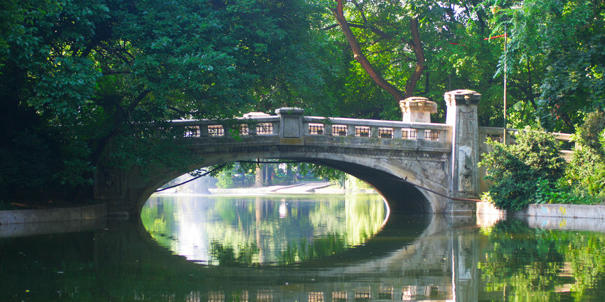

Come visit Bucharest's parks!
A breath of fresh air~
Take a look:
The parks of Bucharest
To many, Bucharest is a city of concrete. But the Romanian capital has many beautiful parks and charming gardens that can provide refuge on hot days and welcome you year-round for a stroll, regardless of the season. Check out some of the best parks in Bucharest:
Cismigiu Gardens: Located in the center of Bucharest, Cismigiu Gardens are the city’s first public garden, opened in 1854. The park was designed by landscape designer Wilhelm Mayer in the style of English gardens and features playgrounds, a gazebo that hosts live concerts in summer and plenty of green meadows for picnics. In the middle of Cismigiu Gardens, an artificial lake is the perfect spot for renting a boat in summer or a pair of skates in winter.
Herastrau Park: Herastrau Park is one of Bucharest’s largest parks, spread over 187 ha. Every week-end, it attracts everyone from families with children to joggers, bikers and nature lovers of all ages. Herastrau also features a lake that represents a great birdwatching spot. Want to see Herastrau from a different angle? Take a boat trip, with departures from the entrance close to Beraria H. The park also includes protected trees. For instance, the cherry trees planted in the Japanese Garden, which were donated by the Emperor of Japan, as well as Tagore’s Oak Tree, which was planted in 1961 to celebrate 100 years since the birth of Indian philosopher and writer Rabindranath Tagore.
Carol Park: Carol Park, a French style public park located in the southern-central area of the capital, was named after King Carol I of Romania. Designed by French landscape artist Edouard Redont in 1900, the park hosts a Mausoleum built in honor of revolutionary socialist militants. Enter the park from the June 11 Square and you will discover two 3.5 meter statues depicting two nude youths, placed at a distance of 50 meters from each other.
Things to do in parks:
Boat rides
If you have ever wanted a romantic experiece, the boat rides are for you! Rent a boat and relax alone or with a special someone while admiring the awe-inspiring view!